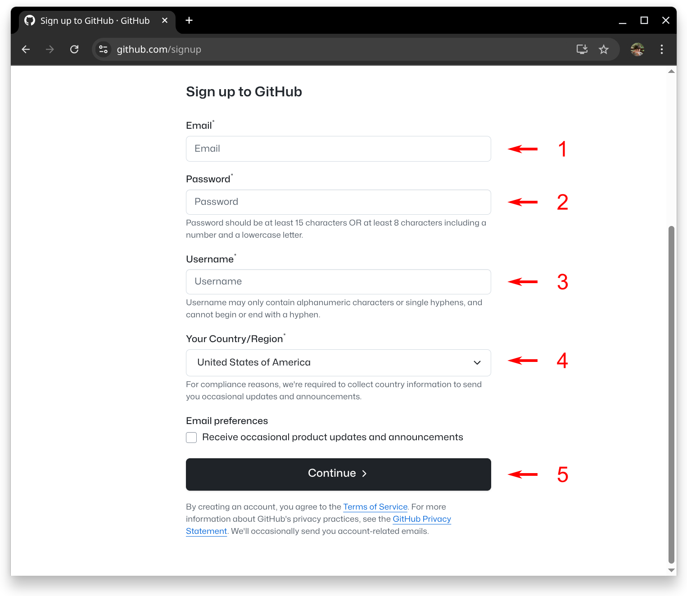
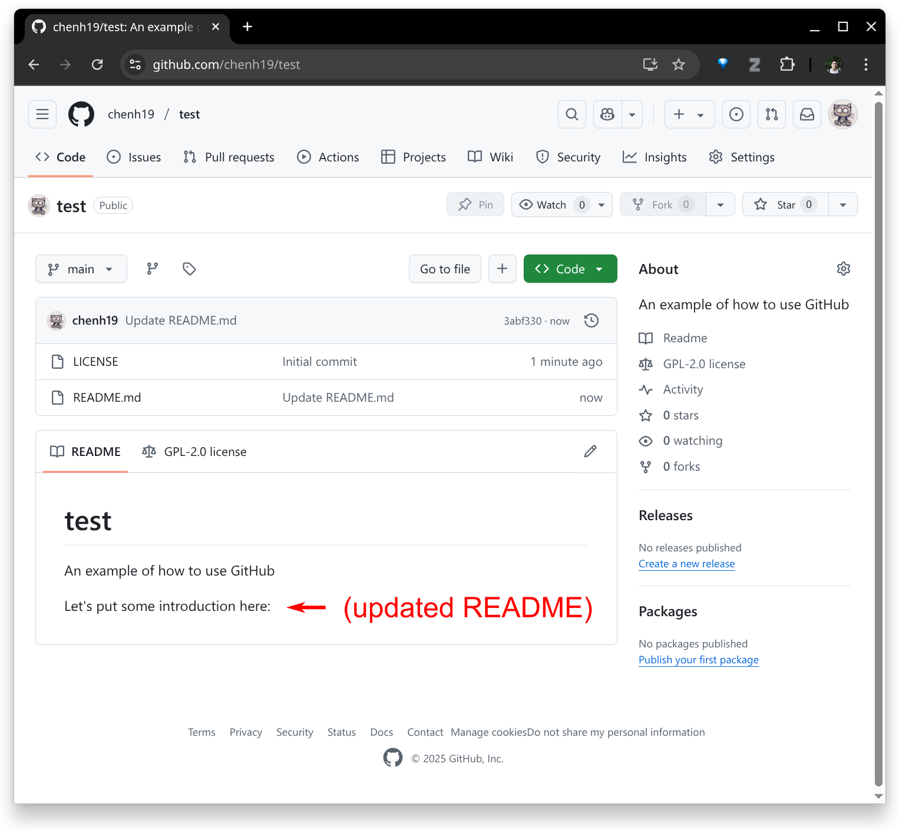
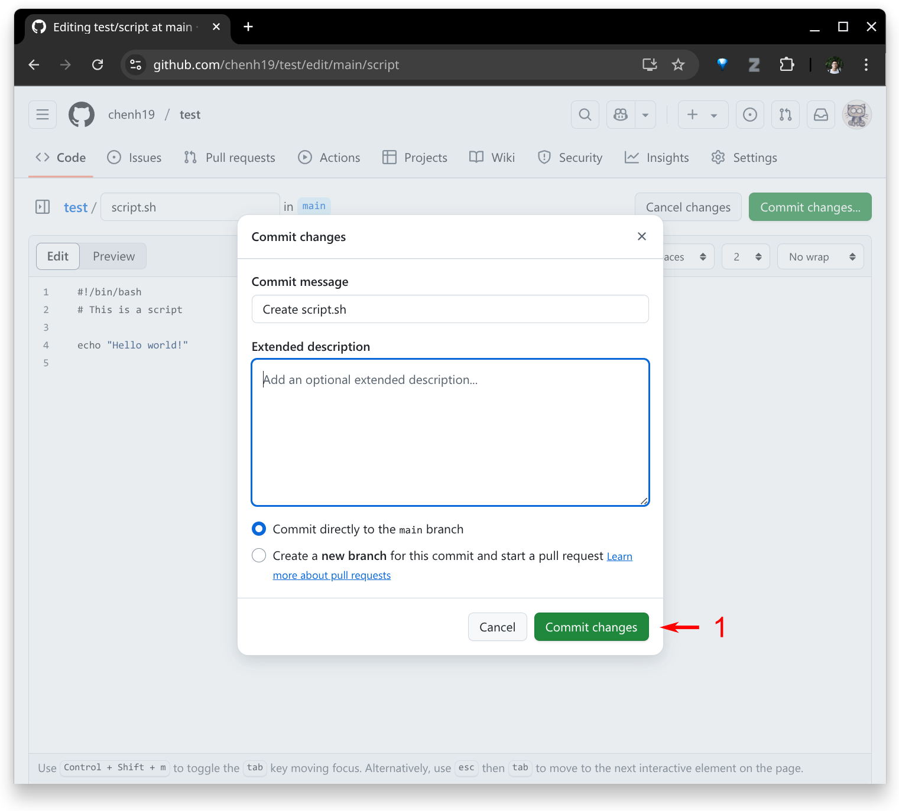
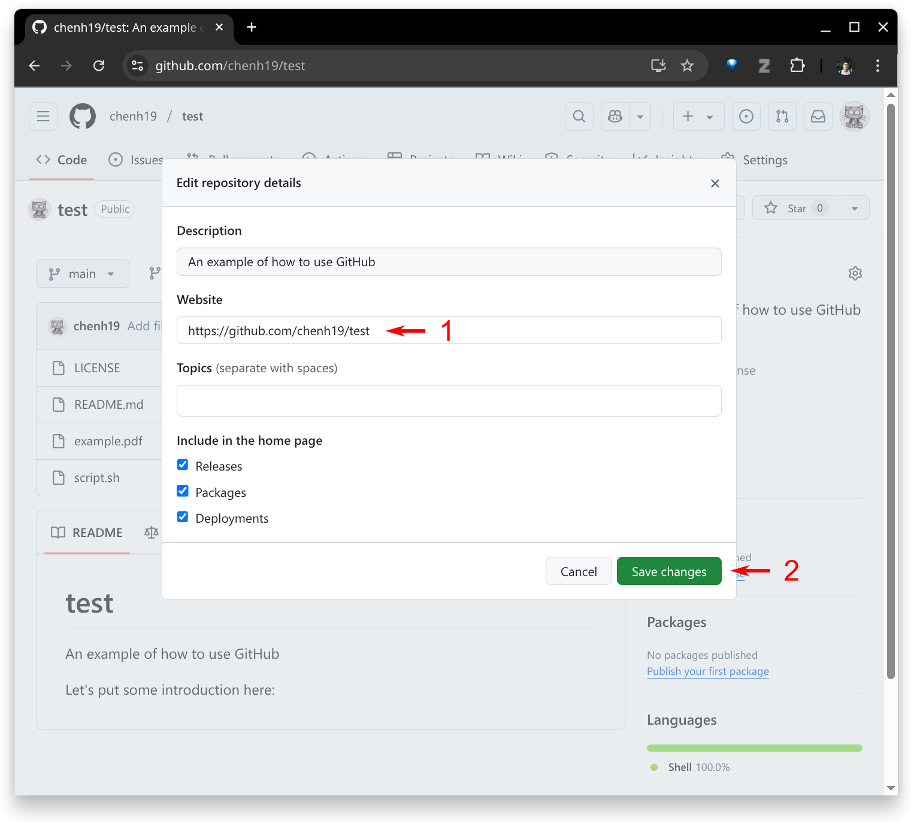
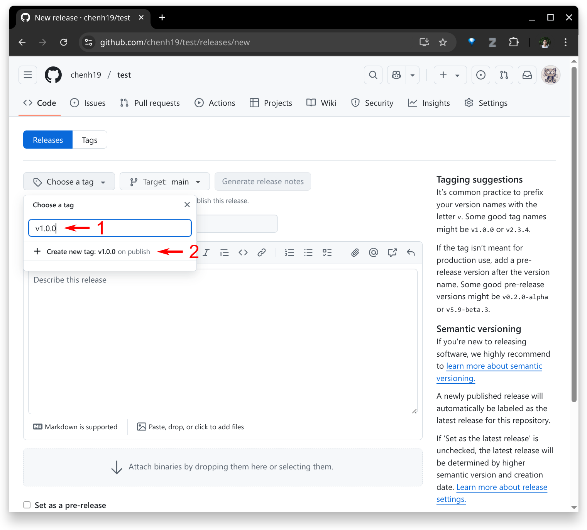
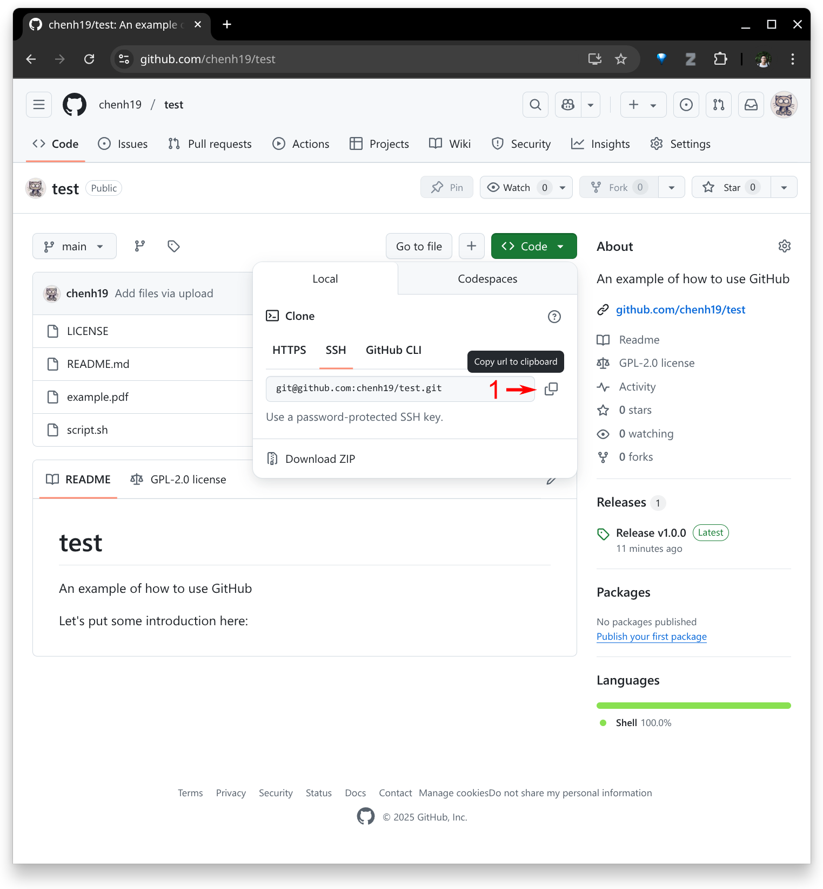
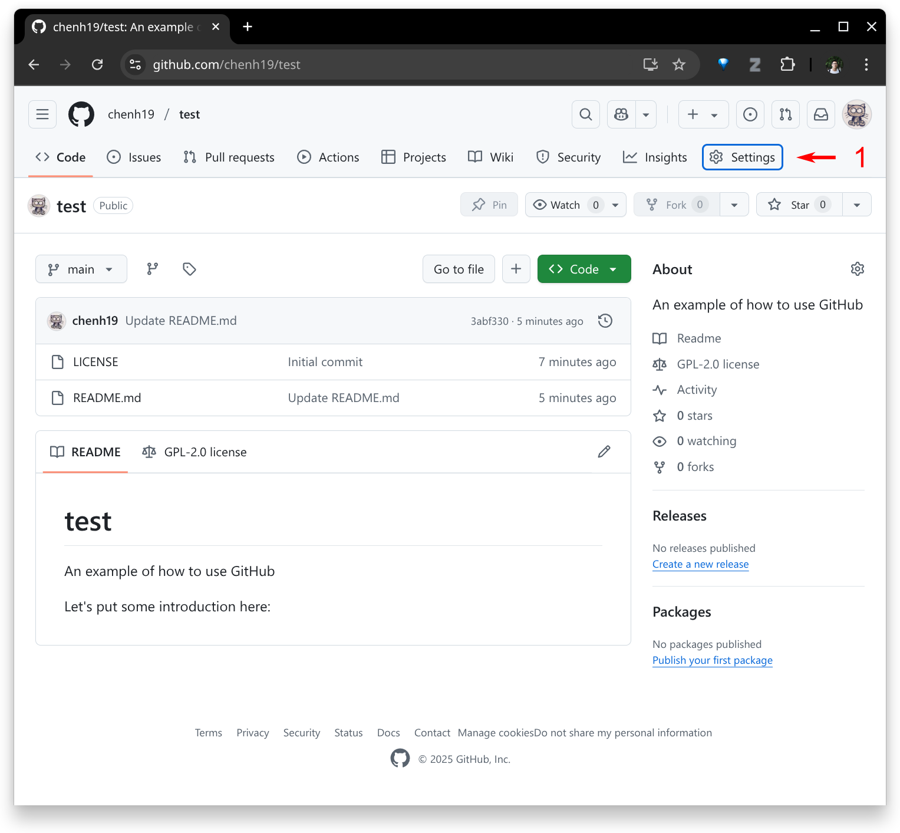
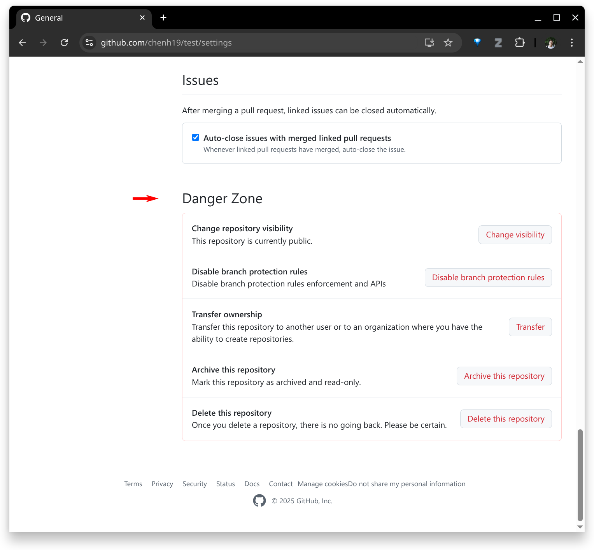

How to Use GitHub: A 5-Minute Tutorial
1. Sign up to GitHub
- If you haven’t already, you may sign up to GitHub here.

Note:
– If you’ve never used Markdown before, it’s a plain text format with simple symbols that allow other software to interpret the structure—like headings, lists, or links. It’s easy to learn and especially useful when working with GitHub. Check out the basic syntax, which covers the most common use cases.
2. Create a new repository
- Now, create a new repository.

- Provide the necessary information to set up your repository.

- Done.

Note:
- There’s nothing fancy about a repository—you may simply think of it as a folder.
- I usually go with GPL 2.0. You may read about open-source licenses and choose one that suits your needs. GitHub also provides a list of licenses you can choose from when creating a repository.
3. Edit the README file
- Click the pencil button to edit.

- Make your edits and then commit.


- Done.

4. Create a new file
- Create a new file in the repository.

- Make your edits and then commit.


- Done.

5. Upload files
- Upload files to the repository.

- Drag and drop your files, then commit.

- Done.

6. Add link to your website
- In some cases, you might have a separate website for your repository. Click the gear icon to add the link.



Note:
- If you’re interested in how to create a website using GitHub, you may check out this tutorial.
7. Create a release
- At some point, you might want to archive and release a specific version of your repository. Click the “Create a new release” button.

- Create a new tag.

- Enter the title and description, upload relevant files (if any), and publish.

- Done.


8. Using command line
- If you’re a more advanced user, you might prefer using the command line to pull the repository to your local machine, make changes, and then push them back to GitHub.
- You’ll need to set up SSH access for your GitHub account. You may check out this tool and tutorial.
- Assuming you’ve already created a repository (see Step 2), find the SSH URL for your repository.

- Create a folder on your local machine (replace
testwith your desired folder name):
mkdir -p ./test/ && cd ./test/"
- Initialize the folder (replace
git@github.com:chenh19/test.gitwith your SSH URL):
git init && git remote add origin git@github.com:chenh19/test.git
- Pull your repository (replace
git@github.com:chenh19/test.gitwith your SSH URL):
git pull git@github.com:chenh19/test.git
Make your edits locally.
Push to your GitHub:
git add --all && git commit -a -m "update" && git push -u origin main
Note:
- This tutorial is intended for beginners and doesn’t cover concepts like “branches,” “pull requests,” and etc. For more advanced or collaborative development, you may want to learn about workflows for merging branches.
9. Repository settings
- You might want to change the repository’s visibility, transfer ownership, or delete it. You can find these options under the “Settings” tab.


10. End
- Now you’ve learned the basics of how to use GitHub. Good luck and happy developing!